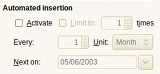

Scheduled transactions
Homebank scheduled transaction are managed from the archive
dialog.
Archives is a grouping of bookmark and scheduled
transactions. You can read further about the archives here.
How to use ?
This is very simple, open the archive dialog
and then:

- select an existing archive (or
create a new one)
- check the 'Activate' check-box in
the 'Automated' frame
- adjust the needed parameters
- frequency: every x day, week,
month, year
- next occurrence date
- optional limitation to x
occurrence
- that's all
Overview of active scheduled transaction
The main window display a list of
'Upcoming automated transactions'.
This list displays every
scheduled (automated) transaction and their state, especially:

- next occurrence date
- remaining days
This remaining day count is negative if the transaction insertion
is overdue.
When scheduled transactions are inserted ?
- when you open an HomeBank file
- when you select the 'Check automated' menu from the main
window
Step by step example
You need to schedule a transaction every month:
- open the archive
dialog
- select an existing archive (or
create a new one)
- check the 'Activate' check-box in
the 'Automated' frame
- set Every to 1
- set Unit to Month
- set the date of the first insert